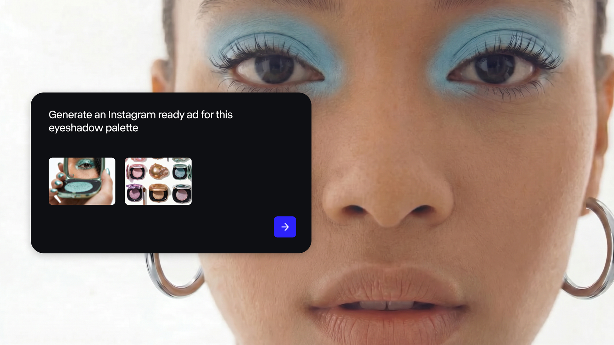

صورة مصدرإنتاج بصري · اليوم/48 ساعة · مصدر رسمي
عنوان الخبر
Runway Dev يتحول إلى منصة API لصناعة الفيديو والصور
ليش يهم: الأهم هنا أن توليد الفيديو لم يعد واجهة للمصممين فقط؛ يتحول إلى طبقة API تدخل داخل المنتجات، المتاجر، الإعلانات، الألعاب وتجارب العملاء.
افتح النص الجاهز والتفاصيل
نص الخبر ومعلوماته
Runway أعلنت في 8 يوليو 2026 عن Runway Dev، منصة للمطورين تدمج نماذج الصورة والفيديو والصوت والشخصيات الحية عبر واجهة واحدة. الإعلان يقول إن فرقًا مثل Adobe وElevenLabs وShutterstock وFigma Weave تستخدمها لإنتاج ملايين المواد البصرية، مع وعود للشركات حول الأمان وعدم تدريب النماذج على بيانات العميل.
الأهم هنا أن توليد الفيديو لم يعد واجهة للمصممين فقط؛ يتحول إلى طبقة API تدخل داخل المنتجات، المتاجر، الإعلانات، الألعاب وتجارب العملاء.
صياغة مقترحة للتغريدة
Runway Dev مهم لأنه ينقل الفيديو التوليدي من أداة يفتحها المصمم إلى API داخل المنتج. يعني الإعلان، المتجر، اللعبة، وتجربة العميل كلها تقدر تولّد صورة وفيديو وصوت من نفس الطبقة. المرحلة الجاية ما بتكون عن جودة اللقطة فقط، بل عن المنتج الذي يعرف متى يولّدها ولماذا.